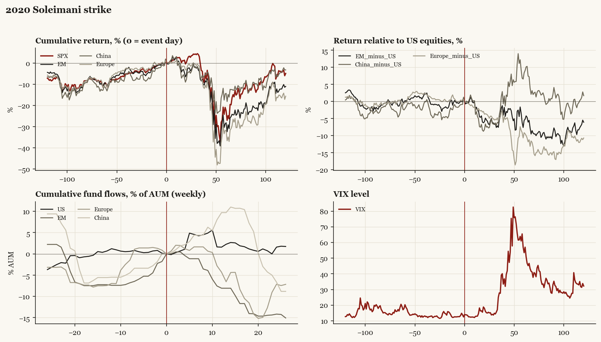

2020 Soleimani strike
Trump1 administration. Outbreak/event 2020-01-03, no buildup window. Surprise; type: one_off.

What moved
- Equities ran +11.2% over the 60 trading days into the event.
- The S&P 500 moved -22.4% over the following 60 trading days and -4.8% over 120.
- Cumulative net flows into US equity funds: +2.3% of assets in the 13 weeks after (vs -0.7% in the 13 weeks before).
- Cumulative net flows into emerging-market funds: -8.1% of assets in the 13 weeks after (vs +7.3% in the 13 weeks before).
- Cumulative net flows into Europe funds: -6.6% of assets in the 13 weeks after (vs +7.4% in the 13 weeks before).
- Cumulative net flows into China funds: +9.7% of assets in the 13 weeks after (vs +5.6% in the 13 weeks before).
- Implied volatility moved +1.4 VIX points across the event (from 12.5).
- Iran missile retaliation 01-08; market at new highs within days
Detail
| series |
runup pre-60d |
+20d |
+60d |
+120d |
| SPX |
+11.2% |
+0.4% |
-22.4% |
-4.8% |
| US |
+11.0% |
+0.5% |
-22.6% |
-4.8% |
| EM |
+10.7% |
-5.4% |
-28.1% |
-10.9% |
| China |
+13.1% |
-7.7% |
-14.2% |
-3.1% |
| Taiwan |
+11.0% |
-6.4% |
-21.9% |
-2.1% |
| Europe |
+11.2% |
-3.2% |
-31.7% |
-15.5% |
| Japan |
+5.5% |
-1.7% |
-18.1% |
-5.5% |
| Bonds |
-2.2% |
+2.6% |
+9.2% |
+9.7% |
| Gold |
+2.7% |
+1.7% |
+1.7% |
+12.9% |